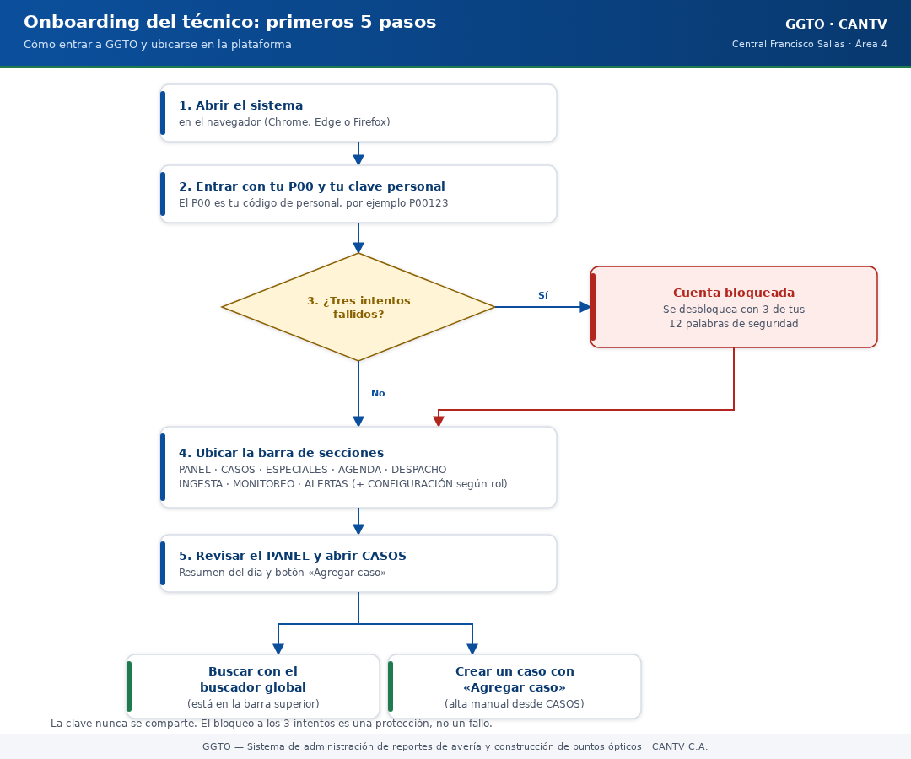
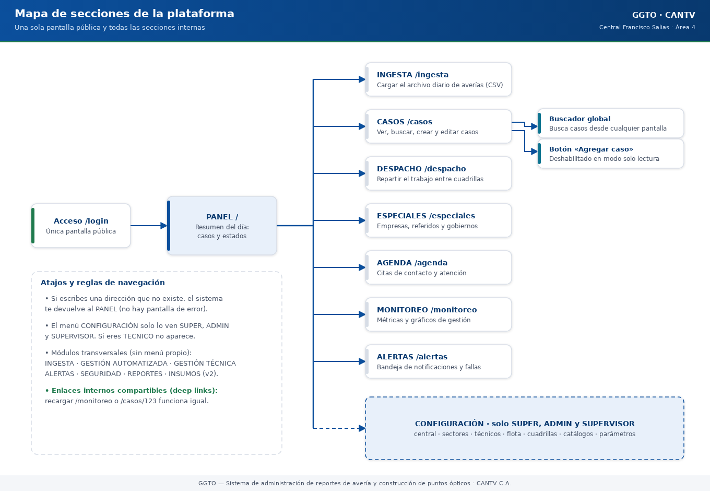
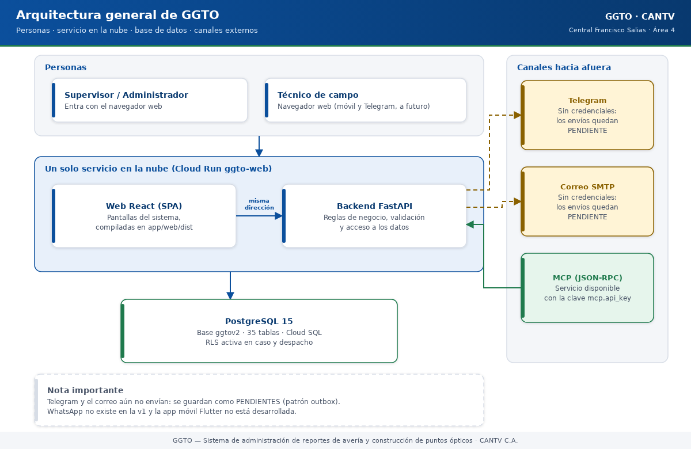
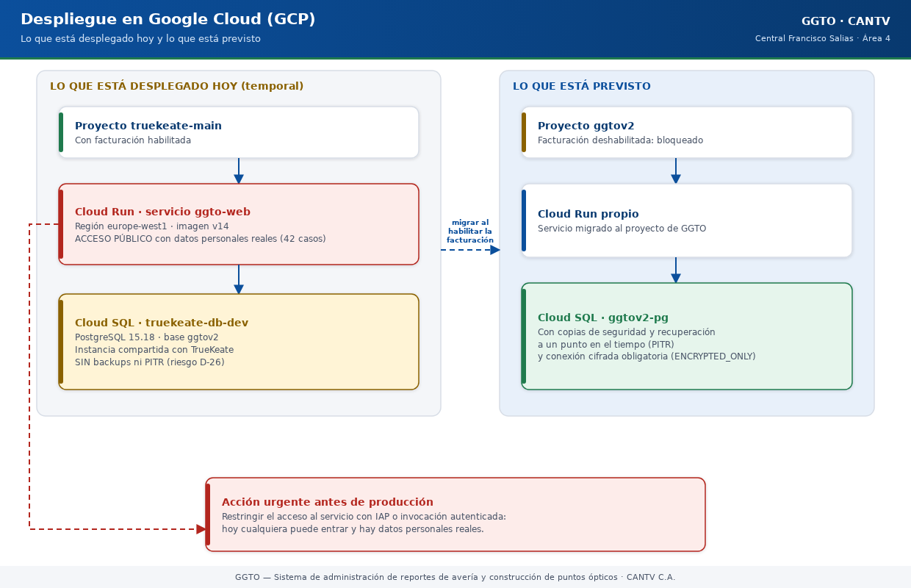

Sistema de administración de reportes de avería y construcción de puntos ópticos
Manual literal · TecnologíaPlataforma GGTO — Visión general y arquitectura
Manual para todo público. Explica qué es GGTO, para qué sirve y cómo está armado por dentro, en lenguaje sencillo. GGTO es el Sistema de administración de reportes de avería y construcción de puntos ópticos de CANTV C.A., Central Francisco Salias (Área 4). Este manual no promete funciones que todavía no existen: cuando algo está pendiente, lo dice con claridad.
Manual para todo público. Explica qué es GGTO, para qué sirve y cómo está armado por dentro, en lenguaje sencillo. GGTO es el Sistema de administración de reportes de avería y construcción de puntos ópticos de CANTV C.A., Central Francisco Salias (Área 4). Este manual no promete funciones que todavía no existen: cuando algo está pendiente, lo dice con claridad.
1Empezar en 5 minutos
Si es tu primer día con GGTO, con estos cinco pasos ya puedes entrar y ubicarte.
- Abre el sistema. En el navegador (Chrome, Edge o Firefox) entra a la dirección que te dio tu supervisor. Verás la pantalla de acceso.
- Escribe tu usuario y tu clave. El usuario es tu P00 (tu código de personal, por ejemplo
P00123). La clave es la que te entregaron. - Si te equivocas tres veces, la cuenta se bloquea. No es un error: es una protección. Se desbloquea con 3 de tus 12 palabras de seguridad.
- Mira la barra de arriba. Ahí están las secciones: PANEL, INGESTA, CASOS, DESPACHO, ESPECIALES, AGENDA, MONITOREO, ALERTAS y —si tu rol lo permite— CONFIGURACIÓN. También hay un buscador global.
- Empieza por el PANEL. Es la pantalla de resumen: te dice cuántos casos hay y en qué estado están. Desde ahí puedes saltar a CASOS y usar el botón «Agregar caso».

Código del gráfico (Mermaid)
flowchart TD
A["1. Abrir el sistema<br/>en el navegador"] --> B["2. Entrar con P00<br/>y clave personal"]
B --> C{"3. ¿Tres intentos<br/>fallidos?"}
C -- "Sí" --> D["Cuenta bloqueada<br/>Desbloquear con 3 de<br/>las 12 palabras"]
C -- "No" --> E["4. Ubicar la barra<br/>de secciones"]
D --> E
E --> F["5. Revisar el PANEL<br/>y abrir CASOS"]
F --> G["Buscar con el<br/>buscador global"]
F --> H["Crear caso con<br/>«Agregar caso»"]2Visión general del sistema
2.1Propósito y alcance
GGTO administra todo el recorrido de un reporte de avería GPON y de una solicitud de construcción de puntos ópticos de la Central Francisco Salias. Dicho de forma simple: entra el reporte del día, se convierte en casos, se reparten entre cuadrillas, se les hace seguimiento y se miden los resultados.
La primera versión cubre estas tareas:
- Acceso seguro con P00, clave, bloqueo y 12 palabras de seguridad.
- CONFIGURACIÓN de todo lo básico: centrales, sectores, técnicos, flota, cuadrillas, catálogos y parámetros.
- INGESTA del archivo diario de averías en formato CSV.
- PANEL y CASOS para ver y gestionar las averías.
- DESPACHO para repartir el trabajo del día.
- ESPECIALES y AGENDA para referidos, empresas, gobiernos y citas.
- MONITOREO y reportes con gráficos.
- ALERTAS, con los canales Telegram, correo y MCP.
El proyecto se apoya en un conjunto formal de requerimientos: 38 RF (requisitos funcionales, es decir, lo que el sistema hace), 25 RNF (requisitos no funcionales: seguridad, rendimiento, disponibilidad) y 14 RT (requisitos técnicos).
| Dato | Valor |
|---|---|
| Nombre del producto | GGTO |
| Cliente | CANTV C.A. |
| Central de esta versión | Francisco Salias (Área 4) |
| Nombre técnico del servicio | GGTO API |
| Versión de la aplicación | 0.9.0 |
| Entorno por defecto | development (desarrollo) |
| Zona horaria | America/Caracas |
Lo que NO existe todavía (no lo busques):
- La aplicación móvil Flutter no está desarrollada. Estaba prevista para el Ciclo 8 y ese ciclo quedó pospuesto. No hay APK para instalar en teléfonos.
- WhatsApp no existe en esta versión. Se retiró de los requerimientos y quedó reservado para una versión futura (v3).
- Telegram y el correo todavía no envían de verdad. No tienen credenciales cargadas en producción. Los mensajes quedan guardados como PENDIENTES en la bandeja de salida del sistema (patrón outbox). Se enviarán cuando se carguen las credenciales.
2.2Actores y roles
Estas son las personas y sistemas que usan GGTO:
| ID | Actor | Por dónde entra |
|---|---|---|
| ACT-01 | Supervisor de la central | Web en computadora |
| ACT-02 | Técnico de campo | Web (y, a futuro, móvil y Telegram) |
| ACT-03 | Personal externo solicitante | Telegram o el canal de IA (MCP) |
| ACT-04 | Administrador del sistema | Web en computadora |
| ACT-05 | El propio sistema (automático) | Backend |
| ACT-06 | Integración de IA (WEB-MCP) | MCP sobre la web |
Los roles reales de esta versión son cuatro: SUPER, ADMIN, SUPERVISOR y TECNICO. Cada rol puede leer unas cosas y escribir otras. La tabla completa de qué puede hacer cada rol está en el manual de autenticación; lo importante aquí es saber que:
- El rol SUPER (Super Usuario) puede hacer todo, siempre, sin excepción. Es un permiso permanente pensado para el control total del sistema.
- Cuando alguien no tiene permiso, el sistema responde con un aviso claro: 401 si la clave o la sesión no sirven, y 423 si la cuenta está bloqueada.
Todavía están pendientes de designar dos responsables externos: la persona de CANTV que vela por la protección de datos y el dueño del sistema que entrega el archivo CSV.
2.3Secciones de la plataforma
La plataforma tiene una pantalla de acceso y varias pantallas internas. Todas las internas piden haber entrado con usuario y clave. Estas son las direcciones y lo que encontrarás en cada una:
| Dirección | Sección | Para qué sirve |
|---|---|---|
/login |
Acceso | Única pantalla pública: entrar al sistema |
/ |
PANEL | Resumen del día: cuántos casos y cómo están |
/ingesta |
INGESTA | Cargar el archivo diario de averías |
/casos |
CASOS | Ver, buscar, crear y editar casos |
/despacho |
DESPACHO | Repartir el trabajo entre cuadrillas |
/especiales |
ESPECIALES | Empresas, referidos y gobiernos |
/agenda |
AGENDA | Citas de contacto y atención |
/monitoreo |
MONITOREO | Métricas y gráficos de gestión |
/alertas |
ALERTAS | Bandeja de notificaciones y fallas |
/central |
CONFIGURACIÓN · Central | Datos de la central |
/sectores |
CONFIGURACIÓN · Sectores | Zonas de trabajo y sus direcciones |
/tecnicos |
CONFIGURACIÓN · Técnicos | Personal técnico |
/flota |
CONFIGURACIÓN · Flota | Vehículos |
/cuadrillas |
CONFIGURACIÓN · Cuadrillas | Equipos de trabajo, sus integrantes y herramientas |
/catalogos |
CONFIGURACIÓN · Catálogos | Causas y métodos |
/parametros |
CONFIGURACIÓN · Parámetros | Valores ajustables del sistema |
Dos aclaraciones útiles:
- La sección CONFIGURACIÓN solo la ven algunos roles. El menú de configuración aparece únicamente para SUPER, ADMIN y SUPERVISOR. Si entras como TECNICO, no verás ese menú; no es un fallo.
- Si escribes una dirección que no existe, el sistema te devuelve al PANEL. No verás una pantalla de error.
Además de esas pantallas, hay módulos que "atraviesan" toda la plataforma sin tener su propio menú: INGESTA, GESTIÓN AUTOMATIZADA, GESTIÓN TÉCNICA, ALERTAS, SEGURIDAD, INSUMOS (previsto para la versión 2) y REPORTES.

Código del gráfico (Mermaid)
flowchart LR
LOGIN["Acceso /login"] --> PANEL["PANEL /"]
PANEL --> ING["INGESTA /ingesta"]
PANEL --> CAS["CASOS /casos"]
PANEL --> DES["DESPACHO /despacho"]
PANEL --> ESP["ESPECIALES /especiales"]
PANEL --> AGE["AGENDA /agenda"]
PANEL --> MON["MONITOREO /monitoreo"]
PANEL --> ALE["ALERTAS /alertas"]
PANEL -. "solo SUPER, ADMIN<br/>y SUPERVISOR" .-> CONF["CONFIGURACIÓN<br/>central · sectores · técnicos<br/>flota · cuadrillas · catálogos · parámetros"]
CAS --> BUS["Buscador global<br/>(barra superior)"]
CAS --> MOD["Botón «Agregar caso»"]3Arquitectura de componentes
Dicho en palabras sencillas, GGTO tiene cuatro piezas grandes: un motor (el backend), una pantalla (la web React), un almacén (la base de datos PostgreSQL) y unas puertas hacia afuera (Telegram, correo y MCP). Veamos cada una.

Código del gráfico (Mermaid)
flowchart TB
subgraph Usuarios["Personas"]
SUP["Supervisor / Administrador<br/>(navegador)"]
TEC["Técnico de campo<br/>(navegador)"]
end
subgraph Contenedor["Un solo servicio en la nube"]
WEB["Web React (SPA)<br/>pantallas del sistema"]
API["Backend FastAPI<br/>reglas y datos"]
WEB -->|"misma dirección, sin CORS"| API
end
subgraph Datos["Base de datos"]
PG[("PostgreSQL 15<br/>base ggtov2<br/>36 tablas")]
end
subgraph Canales["Canales hacia afuera"]
TG["Telegram<br/>(sin credenciales: PENDIENTE)"]
MAIL["Correo SMTP<br/>(sin credenciales: PENDIENTE)"]
MCP["MCP (JSON-RPC)"]
end
SUP --> WEB
TEC --> WEB
API --> PG
API -.-> TG
API -.-> MAIL
MCP --> API3.1Backend FastAPI
El backend es el motor del sistema. Está hecho en FastAPI, una herramienta de Python para construir servicios web. Su trabajo es recibir cada petición, revisar quién la hace, aplicar las reglas y devolver la respuesta.
Al arrancar, el sistema anuncia su nombre y su versión usando los datos de configuración: título
GGTO API, versión 0.9.0. Esas mismas reglas se reparten en nueve módulos de rutas, cada uno
encargado de un tema:
| Módulo | Tema | Cantidad de operaciones |
|---|---|---|
routes_health |
Salud del servicio (/health, /ready) |
4 |
routes_auth |
Acceso y sesión | 7 |
routes_config |
CONFIGURACIÓN | 35 |
routes_ingesta |
INGESTA | 5 |
routes_casos |
PANEL y CASOS | 6 |
routes_despachos |
DESPACHO | 18 |
routes_especiales |
ESPECIALES, AGENDA y seguimiento | 14 |
routes_monitoreo |
MONITOREO y reportes | 9 |
routes_alertas |
ALERTAS, Telegram y MCP | 11 |
Un dato que conviene entender bien porque aparece en toda la documentación: el sistema habla de 79 endpoints (direcciones de la API). En realidad son 79 direcciones que agrupan 109 operaciones, porque una misma dirección puede atender varias acciones (por ejemplo, consultar y crear). Cuando alguien diga "79 endpoints", se refiere a esas 79 direcciones.
3.2SPA React servida por el mismo contenedor
La parte visual es una SPA (Single Page Application): una aplicación web que se carga una vez y luego cambia de pantalla sin recargar el navegador. Está hecha con React y se compila con Vite.
Lo importante para la operación es esto: la web y el motor viven juntos, en el mismo servicio. No son dos servidores separados. Ventajas prácticas:
- Hay una sola dirección que recordar.
- No hay problemas de comunicación entre la web y el motor.
- Cuando recargas una pantalla interna (por ejemplo
/monitoreo), sigue funcionando: el motor devuelve la página principal y React decide qué mostrar. A esto se le llama deep links.
Si algún día se despliega el motor sin la parte visual, el servicio funciona igual, pero como API pura, sin pantallas.
3.3Base de datos PostgreSQL
El almacén de GGTO es una base de datos PostgreSQL. Guarda todo: usuarios, centrales,
técnicos, cuadrillas, casos, despachos, citas, notificaciones y más. En total son 36 tablas.
La última en incorporarse (ciclo D-66) es cuadrilla_sector_dia, que guarda qué sectores atiende
cada cuadrilla cada día.
Datos de conexión usuales (los valores reales se cargan por entorno y no se escriben en este manual):
| Dato | Valor habitual |
|---|---|
Servidor (DB_HOST) |
localhost en desarrollo; en la nube, un socket de Cloud SQL |
Puerto (DB_PORT) |
5432 |
Nombre de la base (DB_NAME) |
ggtov2 |
Usuario (DB_USER) |
ggtov2_app |
Clave (DB_PASSWORD) |
Vacía por defecto; se inyecta por entorno |
Seguridad de conexión (DB_SSLMODE) |
prefer en desarrollo; require en la nube |
Esquema (DB_SCHEMA) |
Vacío = esquema normal; en pruebas se usa ggto_test o ggto_e2e |
Estado actual de la base en producción:
| Comprobación | Resultado |
|---|---|
| Instancia | truekeate-db-dev (PostgreSQL 15.18) |
| Base | ggtov2 |
| Extensiones | pgcrypto 1.3, pg_trgm 1.6 |
| Seguridad por filas (RLS) | Activa en caso y despacho, con 2 políticas |
Disparadores actualizado_en |
14 |
| Índices de búsqueda por texto | 2 (dirección de caso y patrones de sector) |
| Datos iniciales | 3 roles, 1 central, 1 cuadrilla, 9 métodos, 13 parámetros, 0 causas |
El detalle de cada tabla está en los manuales de Diccionario de Datos y Diagrama Relacional.
3.4Canales externos (Telegram, correo SMTP, MCP)
Los canales de notificación de esta versión son tres: Telegram, correo (SMTP) y MCP.
El MCP es un canal técnico: un servidor JSON-RPC que permite que otras herramientas (por ejemplo, un asistente de IA) consulten datos de GGTO de forma controlada.
Lo que hoy funciona y lo que no:
- Telegram: no envía todavía. No hay credenciales cargadas. Cada mensaje queda PENDIENTE en la bandeja de salida.
- Correo: tampoco envía todavía. Mismo motivo.
- MCP: existe como servicio y responde si se le presenta la clave correcta.
- WhatsApp: no existe en esta versión.
El sistema guarda todo lo que quiere notificar en una bandeja de salida (en inglés, outbox). Cuando lleguen las credenciales, esa bandeja se procesa y los mensajes salen. Mientras tanto, nada se pierde: se acumulan ordenadamente con su estado.
Los parámetros que gobiernan alertas y envíos se guardan en la tabla configuracion:
| Clave | Valor inicial | Para qué sirve |
|---|---|---|
fallas.activo |
true |
Activa la detección de fallas masivas |
fallas.umbral_casos |
5 |
Cuántos casos juntos cuentan como falla |
fallas.ventana_horas |
24 |
Ventana de tiempo para agrupar |
fallas.campo_concentracion |
olt |
Campo por el que se agrupa: olt, fat o id_sector |
despacho.destino_telegram |
vacío | Destino del despacho; si está vacío, queda PENDIENTE |
outbox.max_intentos |
5 |
Reintentos máximos de un envío |
telegram.webhook_secret |
vacío | Clave del webhook de Telegram |
mcp.api_key |
vacío | Clave del canal MCP |
La detección de fallas no se duplica: mientras una falla siga activa no se genera otra igual. Se ejecuta automáticamente después de cada carga de CSV y también a mano, cuando se pide.
Nunca se documentan los valores de los secretos (claves, tokens, contraseñas). Solo se documentan sus nombres:
SECRET_KEY,DB_PASSWORD,TELEGRAM_BOT_TOKEN,SMTP_HOST,SMTP_PASSWORDyMCP_API_KEY.
4Flujo de una operacion tipica (peticion -> middleware -> router -> servicio -> BD)
Cuando haces clic en algo, tu petición recorre un camino fijo. Conocerlo ayuda a entender los mensajes de error y a reportar problemas con precisión. Ejemplo: abrir la lista de CASOS.
- Entra la petición y se le pone una etiqueta. El sistema le asigna un X-Request-ID: un código corto que identifica esa petición concreta. Si tu navegador ya traía uno, lo respeta.
- Se mide el tiempo. El sistema anota la hora de inicio y, al terminar, calcula cuántos milisegundos tardó.
- Se revisan los permisos de origen (CORS). Es el control de qué páginas pueden hablar con el sistema. Como la web vive en el mismo servicio, casi nunca da problemas.
- El router decide quién atiende. Según la dirección y el método (consultar, crear, editar), el sistema elige el módulo correspondiente. Para la lista de casos, es el módulo de CASOS.
- Se comprueba el usuario. El sistema lee tu token de sesión, busca tu usuario por el P00 y verifica dos cosas: que estés activo y que no estés bloqueado.
- Se validan los datos. Si escribiste texto de búsqueda o filtros, se revisan antes de usarlos.
Por ejemplo, el campo
qbusca en avería, teléfono, cliente o dirección. - Se aplican las reglas de negocio. Aquí viven la sectorización, los cálculos y las validaciones. Estas reglas están en la carpeta de servicios del sistema.
- Se consulta la base de datos. Se piden los datos a PostgreSQL.
- Se arma la respuesta. El sistema le agrega datos útiles calculados (por ejemplo, el nombre del sector y los iconos de estado) y valida el formato.
- Sale la respuesta. Se devuelve con su etiqueta X-Request-ID y queda registrada una línea en el registro del sistema con el código y el tiempo.
Para las acciones que escriben (crear o editar) hay un paso extra antes de las reglas: la autorización. Si tu rol no tiene permiso, recibirás un aviso en vez de un cambio.
Resumen visual del camino:
Tu navegador → Internet seguro → Etiqueta X-Request-ID
→ Control de origen (CORS)
→ Router del sistema → Verificación de usuario y permisos
→ Reglas de negocio → Consulta a PostgreSQL
→ Respuesta ordenada → Pantalla
5Despliegue en GCP
GCP es la nube de Google donde vive el sistema. Estas secciones explican dónde está alojado hoy y qué riesgos hay que conocer.
5.1Proyecto ggtov2 y bloqueo de facturacion
El proyecto previsto para GGTO se llama ggtov2. El problema es que su facturación está
deshabilitada: se agotó el cupo de 5 proyectos y, sin facturación, no se pueden activar los
servicios necesarios (Cloud Run, Artifact Registry, Cloud Build, Secret Manager), ni crear recursos
propios.
Plan cuando se habilite la facturación:
- Migrar el servicio al proyecto
ggtov2. - Usar su propia base de datos
ggtov2-pg. - Configurarla con copias de seguridad, recuperación a un punto en el tiempo (PITR) y conexión
cifrada obligatoria (
ENCRYPTED_ONLY).
Mientras eso no ocurra, el sistema vive en otro proyecto. Este es un dato central: cualquier persona nueva debe saber que el despliegue actual es temporal.
5.2Servicio Cloud Run ggto-web en truekeate-main
El sistema está alojado temporalmente en el proyecto truekeate-main, que sí tiene facturación.
| Dato | Valor |
|---|---|
| Servicio | Cloud Run ggto-web |
| Región | europe-west1 |
| Dirección principal | https://ggto-web-593453426217.europe-west1.run.app |
| Dirección alternativa | https://ggto-web-m33mjctj4a-ew.a.run.app |
| Cuenta de servicio | ggto-web-sa@truekeate-main.iam.gserviceaccount.com |
| Imagen (última documentada) | .../truekeate-repo/ggto-web:v14 |
| Revisión (última documentada) | ggto-web-00014-zqx |
La imagen del sistema es multi-etapa: primero Node compila la parte visual y después Python la
sirve junto con el motor. La cuenta de servicio tiene permiso para conectarse a la base de datos y
para leer los secretos ggtov2-db-password y ggto-secret-key.
Historial de versiones desplegadas (es una línea de tiempo histórica; la versión vigente es la que confirme el operador en la consola):
| Revisión | Imagen | Hito |
|---|---|---|
ggto-web-00002-rbl |
v2 | Ciclo 1 — núcleo y autenticación |
ggto-web-00003-6zb |
v3 | Ciclo 2 — CONFIGURACIÓN |
ggto-web-00004-cj9 |
v4 | Ciclo 3 — INGESTA CSV |
ggto-web-00005-rxm |
v5 | Ciclo 4 — PANEL y CASOS |
ggto-web-00006-htl |
v6 | Super Usuario con acceso total |
ggto-web-00007-vsr |
v7 | Ciclo 5 — DESPACHO |
ggto-web-00008-vr5 |
v8 | Ciclo 6 — ESPECIALES y AGENDA |
ggto-web-00009-fvc |
v9 | Ciclo 7 — MONITOREO y reportes |
ggto-web-00014-zqx |
v14 | Ciclo 9 — ALERTAS, Telegram y MCP |
Entre la v9 y la v14 hubo hitos intermedios (por ejemplo, el rediseño de navegación de la decisión D-57). Para saber qué versión está activa hoy, consúltalo en la consola de Google: es un dato que cambia y no se puede dar por fijo en un manual.
Los scripts de instalación en la nube están en la carpeta RepoTecnico/scripts/. Se ejecutan en
orden, del 00 al 10, y existe un orquestador que los coordina. El manual de scripts GCP los
explica uno por uno.
5.3Cloud SQL compartida truekeate-db-dev
La base de datos de GGTO comparte servidor con otro producto llamado TrueKeate. La instancia es
truekeate-db-dev (PostgreSQL 15.18), con la base ggtov2 y el usuario ggtov2_app. Compartir
servidor tiene consecuencias, como se explica en los riesgos más abajo.
En la nube, la aplicación se conecta por un socket (una vía interna de comunicación). Por eso la
dirección del servidor no es una IP sino una ruta que empieza por /cloudsql/. La conexión
documentada es:
DB_HOST=/cloudsql/truekeate-main:southamerica-east1:truekeate-db-dev
DB_PORT=5432
DB_NAME=ggtov2
DB_USER=ggtov2_app
DB_PASSWORD=<desde Secret Manager: ggtov2-db-password>
DB_SSLMODE=require
Modo de pruebas: existe una variable llamada DB_SCHEMA que permite trabajar en un "cajón"
separado dentro de la misma base. Se usan dos:
ggto_test→ para las pruebas automáticas de Python (pytest).ggto_e2e→ para las pruebas de navegador (Playwright).
Nunca se apunta a datos de producción durante las pruebas.
5.4Pendientes y riesgos (D-26, acceso publico con PII)
Hay dos riesgos abiertos que toda persona que cargue datos debe conocer.
Riesgo D-26 — la instancia compartida no tiene copias de seguridad ni cifrado obligatorio. Se
decidió aceptar este riesgo y no tocar la configuración, porque la instancia es compartida con
TrueKeate. El cierre previsto es migrar a ggtov2-pg con copias, PITR y cifrado cuando se habilite
la facturación. La decisión incluye una instrucción operativa explícita: no cargar datos reales
hasta que se migre. Esto incumple el requisito RNF-16 (copia de seguridad con recuperación en
menos de 24 horas y restauración en menos de 4 horas).
Riesgo de acceso público con datos personales. El servicio Cloud Run está abierto a cualquier
persona (allUsers) y contiene datos personales reales de suscriptores (hay 1 lote cargado con
42 casos reales). Esto debe restringirse antes de usar el sistema en producción. La
mitigación prevista es exigir autenticación para entrar (IAP o invocación autenticada) y evaluar el
traslado a una instancia con respaldo.
| Riesgo | Qué significa | Estado | Cómo se piensa resolver |
|---|---|---|---|
| D-26 | Sin copias de seguridad, PITR ni cifrado obligatorio | Aceptado por la Dirección | Migrar a ggtov2-pg al habilitar facturación |
| Acceso público | Cualquiera puede entrar y hay datos personales reales (42 casos) | Abierto | Restringir con IAP o exigir autenticación antes de producción |
Facturación ggtov2 |
Facturación deshabilitada, sin servicios de despliegue | Bloqueado | Liberar cupo y migrar el servicio |
| Credenciales de canales | Telegram y correo sin credenciales | Diferido | Cargar secretos y procesar la bandeja de salida |
| Contrato de la interfaz CSV | El documento de la interfaz no está firmado | Pendiente de CANTV | Firma de la decisión D-41 |
Todas las cifras y versiones de esta sección deben confirmarse en la consola de Google antes de usarlas para una decisión. Lo que no se pueda comprobar se reporta como pendiente de confirmar.

Código del gráfico (Mermaid)
flowchart TB
subgraph Real["Lo que está desplegado HOY (temporal)"]
P1["Proyecto truekeate-main<br/>(con facturación)"]
CR["Cloud Run ggto-web<br/>europe-west1 · imagen v14<br/>ACCESO PÚBLICO con datos reales"]
DB["Cloud SQL truekeate-db-dev<br/>compartida con TrueKeate<br/>sin backups ni PITR (D-26)"]
P1 --> CR
CR -->|"socket /cloudsql/..."| DB
end
subgraph Previsto["Lo que está previsto"]
P2["Proyecto ggtov2<br/>(facturación deshabilitada)"]
CR2["Cloud Run propio"]
DB2["Cloud SQL ggtov2-pg<br/>con backups, PITR y cifrado"]
P2 --> CR2 --> DB2
end
Real -. "migrar cuando se habilite<br/>la facturación" .-> Previsto
CR -. "restringir acceso<br/>(IAP o autenticación)" .-> FIX["Acción urgente"]